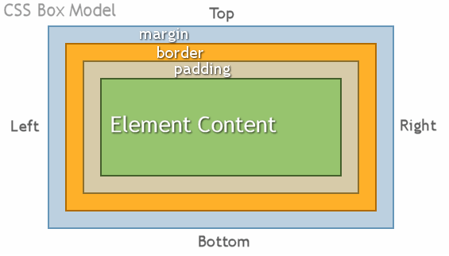

<!doctype html>
<html>
<head>
    <meta charset="utf-8">
    <meta name="viewport" content="width=device-width, initial-scale=1.0, maximum-scale=1.0, user-scalable=no">
    <link rel="stylesheet" href="reveal/css/reveal.css">
    <link rel="stylesheet" href="reveal/css/theme/kontur-light.css" id="theme">
    <!-- Theme used for syntax highlighting of code -->
    <link rel="stylesheet" href="reveal/css/highlight/idea-for-light.css">
    <link rel="stylesheet" href="reveal/css/highlight/darkula-for-dark.css">
    <!--[if lt IE 9]>
    <script src="reveal/js/html5shiv.js"></script>
    <![endif]-->
    <script defer src="reveal/js/head.min.js"></script>
    <script defer src="reveal/js/reveal.js"></script>
    <script defer src="reveal/initialize.js"></script>
    <script defer src="reveal/js/d3.min.js"></script>

    <title>Введение в верстку</title>
</head>
<body>

<div class="reveal"><div class="slides">

<section data-markdown><script type="text/template">

# Базовая верстка

</script></section>

<section data-markdown><script type="text/template">

## Что такое верстка?

***

*Верстка* — все, что видит пользователь на страничке в браузере, в почтовом письме или, иногда, в мобильном приложении.

***

### Компоненты верстки:

1. HTML
2. CSS

</script></section>

<section data-markdown><script type="text/template">

## HTML

***

*HTML* (HyperText Markup Language) — язык разметки. С его помощью описывают структуру страницы.

***

### Структура html-документа

```html
<!DOCTYPE html>
<html lang="ru">
<head>
    <meta charset="utf-8">
    <title>Заголовок страницы</title>
    <link rel="stylesheet" href="css/style.css">
</head>
<body>
<!--основная разметка страницы-->
Hello World!
</body>
</html>
```

***

### Создадим наш первый HTML-документ

1. Открой «Блокнот»
2. Скопируй туда код с предыдущего слайда
3. Сохрани файл куда-нибудь под названием `index.html`
    - Обрати внимание в диалоге сохранения на пункт "Тип файла"
4. Открой файл двойным кликом: он должен запуститься в браузере


***

### Давай посмотрим на HTML на настоящем сайте

- Переходи на сайт [kontur.ru](https://kontur.ru/)
- Нажимай на странице сайта правой кнопкой мыши
- В контекстном меню выбери “Исследовать элемент” (Inspect Element)

***

### Теги

*Тег* — это элемент языка разметки. Тег указывает браузеру, как ему отобразить текст, содержащийся между открывающим и
закрывающим тегом.


***

### Некоторые полезные теги: тексты


```html
<h1>Заголовок h1</h1>
<h2>Заголовок h2</h2>
<h3>Заголовок h3</h3>
<h6>Заголовок h6</h6>

<p>
Параграф текста. <br>
С переносом текста.
</p>

<i>Курсив</i>
<b>Жирный</b>
```


***

### Некоторые полезные теги: списки


```html
<ul>
    <li>Элемент</li>
    <li>ненумерованного</li>
    <li>списка</li>
</ul>

<ol>
    <li>Элемент</li>
    <li>нумерованного</li>
    <li>списка</li>
</ol>

```


***

### Некоторые полезные теги: медиа

```html
<a href="/home">Домой</a>
<br>
<a href="https://kontur.ru/" target="_blank">Kontur</a>

<br>

```


***

### Практика. Текстовые теги

Разметим текст из статьи на хабре [Культура обратной связи: как не скатиться до обвинений](
https://habr.com/en/company/skbkontur/blog/433628/). Код писать будем [в песочнице](
https://codepen.io/Aminopyridin/pen/omzGqd?editors=1000)

Задание:
- Сделать заголовок
- Сделать параграфы текста там, где они должны быть в оригинальной статье
- Сделать ненумрованный список, такой же, как в статье
- Сделать ссылку «мы писали в октябре»
- Какой-нибудь текст сделать курсивом
- Какой-нибудь текст сделать жирным

***

## Теперь мы умеем создавать сайты =)
</script></section>

<section data-markdown><script type="text/template">

## CSS

***

*CSS* (Cascading Style Sheets) — язык описания внешнего вида документа.

HTML — это контент, CSS — украшение этого контента.

***

### Какие-то стили уже есть в браузере

Давайте посмотрим на них.
Откроем инспектор на страничке, которую только что разметили.

***

### Структура CSS


</script></section>

<section data-markdown><script type="text/template">

## Селекторы

***

*Селектор* — правило, по которому браузер находит на странице элемент, к которому вы хотите обратиться.


***

### Какие бывают селекторы

[Интерактивный пример](https://codepen.io/Aminopyridin/pen/VgKQbX?editors=1100)


```html
<a href="example" class="link">Привет!</a>
```


- по тегу: `a`
- по классу: `.link`

[Все типы селекторов](https://webref.ru/css#selectors)


</script></section>

<section data-markdown><script type="text/template">

## Теги, нужные только для стилей

***

### Универсальные селекторы

- `span` — строчный элемент
- `div` — блочный элемент

```html
<p>
    Узнавание бренда, <span>на первый взгляд</span>,
    <span>однородно выбирает мифологический</span> побочный PR-эффект.
</p>
<div>Блочный</div> <div>Элемент</div>
```


</script></section>

<section data-markdown><script type="text/template">

## Цвета

***

### Свойства для задания цветов

- color — цвет текста
- background-color — цвет фона

***

### Значения цветов

[Интерактивный пример](https://codepen.io/Aminopyridin/pen/qgaQOM?editors=1100)

- Текстовое значение: `red`, `green`, `blue`...
- Шестнадцатиричное значение: `#000000`, `#333333`, `#24a2a2`
- RGB/RGBA: `rgb(214, 122, 0)`, `rgba(23, 145, 255, 0.5)`

[Все значения цветов](https://webref.ru/css/value/color)

***

### Практика. Цвета

1. Открой [песочницу](https://codepen.io/Aminopyridin/pen/jdMXJJ?editors=1100)
2. Сделай, чтобы фон блока с классом `red` стал красным, блока с классом `yellow` стал желтым, а блока с классом
`green` — зеленым.
3. Сделай, чтобы в блоках red и green цвет текста стал белым
4. *Выбери один из цветов при помощи инструмента "Пипетка" в инструментах разработчика

</script></section>

<section data-markdown><script type="text/template">

## Шрифты

***

### Размер

Свойство `font-size` задает размер текста.

```css
p {
    font-size: 16px;
}
```

***

### Межстрочный интервал

Свойство `line-height` задает межстрочное расстояние.

```css
.narrow {
    font-size: 16px;
    line-height: 0.7;
}

.spacious {
    font-size: 16px;
    line-height: 32px;
}
```


***

### Жирность текста

```html
<span class='bold'>Жирный</span>
<span class='normal'>Нормальный</span>
<span class='lighter'>Легкий</span>
```

```css
.bold {
    font-weight: bold;
}
.normal {
    font-weight: normal;
}
.lighter {
    font-weight: lighter;
}
```


[Посмотреть](https://codepen.io/Aminopyridin/pen/aXmXqw?editors=1100)

***

### Курсив

```css
.italic {
    font-style: italic;
}
```

***

### Зачеркивание и подчеркивание

```html
<span class='underline'>Подчеркнутый</span>
<span class='crossed-out'>Зачеркнутый</span>
```

```css
.underline {
    text-decoration: underline;
}
.crossed-out {
    text-decoration: line-through;
}
```


[Посмотреть](https://codepen.io/Aminopyridin/pen/aXmXqw?editors=1100)

***

### Практика. Стили текста

1. Вернись к первой практике (там где разметка статьи была)
2. Выбери одно слово и сделай его зачеркнутым.
3. Выбери одно слово и сделай его синим и подчеркнутым. Чтобы оно выглядело как ссылка, но ссылкой не было.

</script></section>

<section data-markdown><script type="text/template">

## Блочная модель

***

### Блочные и строчные элементы

Как отобразятся следующие части разметки?

1.
```html
<p>Текст параграфа</p>
<p>Текст второго параграфа</p>
```

2.
```html
<i>Текст курсивом</i>
<b>Текст жирным шрифтом</b>
```


***

### Типы элементов

1. *Блочные* (block). Переносятся на новую строку, им можно задавать ширину и высоту. Пример: `div`, `p`, `ol`
2. *Срочные* (inline). Занимают место в тексте, игнорируют заданные размеры. Пример: `span`, `i`, `b`
3. *Блочно-строчные* (inline-block). Занимают место в тексте, можно задавать высоту и ширину. Пример: `img`

***

### Размеры элемента

- width — ширина
- height — высота

Не работают для строчных элементов.

***

### Отступы у элемента

- margin — внешний отступ, от других элементов
- padding — внутренний отступ, поле

[Посмотреть](https://codepen.io/Aminopyridin/pen/VgKRMO?editors=1100)

***

### Как сменить тип отображения

```css
.block { display: block; }
.inline { display: inline; }
.inline-block { display: inline-block; }
.hide { display: none; }
```

***

### Граница элемента

```css
.bordered { border: 1px solid #ffff00 }
```

[Посмотреть](https://codepen.io/Aminopyridin/pen/rPWMXN?editors=1100)


***


### Блочная модель




</script></section>

<section data-markdown><script type="text/template">


### Ресурсы

- [Справочник HTML](https://webref.ru/html)
- [Туториал по основам верстки](https://melnik909.gitbooks.io/tutorial-for-beginner-front-end-developer/content/)

</script></section>

</div></div>
</body>
</html>
